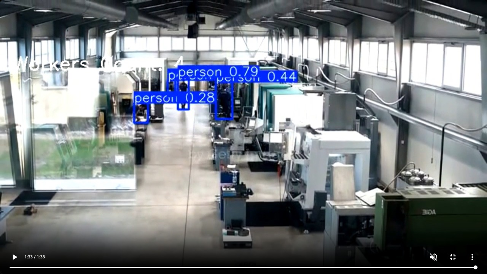
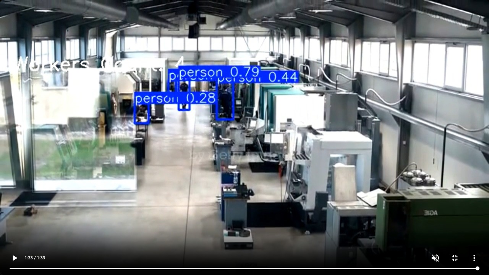
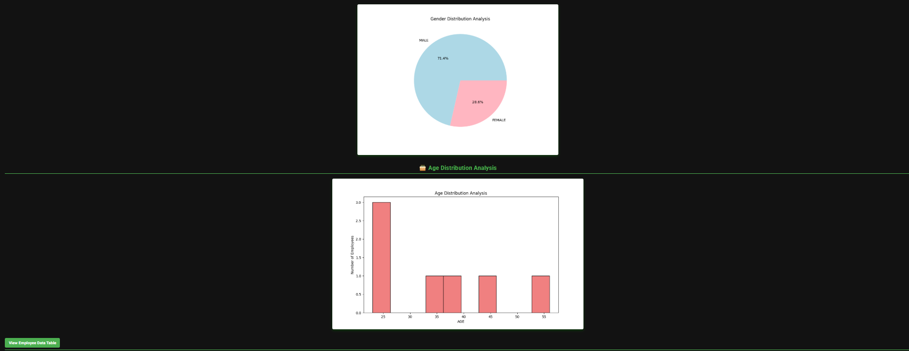
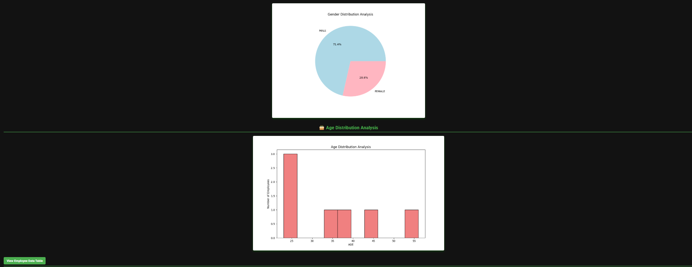

Workforce Efficiency Monitoring
This version is updatedA comprehensive system combining Flask, YOLOv8, and OpenCV to automate attendance, monitor worker safety, and generate actionable insights via computer vision.
Overview
The Workforce Efficiency & Attendance System is built on Flask for the backend and utilizes computer vision for worker detection, zone monitoring, and trespassing alerts. It features facial recognition for automated attendance tracking, an employee self-service portal, and admin controls for managing records. The system also provides comprehensive data visualization and generates detailed reports in Excel and PDF formats.
Login & Admin Dashboard
Secure login for employees and admins with role-based access controls built using Flask.
Worker Detection

 

Utilizes the YOLOv8m object detection model to analyze CCTV footage. The model draws bounding boxes around detected individuals with confidence scores, ensuring accurate identification in various environments.
Real-time Worker Counting

OpenCV overlays the total worker count dynamically as the number of detected workers changes in each frame, enabling efficient post-processing monitoring.
Trespassing Alerts

A designated Region of Interest (ROI) is monitored. If a worker crosses this boundary, the system flags a trespassing event, integrating object detection with region-based rule enforcement.
Overcrowding Detection
If the worker density within a specific zone exceeds a predefined limit, the system triggers an "Exceeds Limit" alert, ensuring compliance with safety regulations.
Data Visualization
 

Extracts employee details from SQLite3 and processes them using NumPy and Pandas. Matplotlib generates bar graphs and pie charts for attendance trends, age, and gender distribution.
Shift Management

Admins can manage schedules and trigger automated email notifications using Python's smtplib.
Employee Portal

Employees can access records, update details, and request changes via a personal dashboard.
Performance Reviews
Digital storage and retrieval of performance reviews for transparent feedback.
Leave Applications

Streamlined leave request and approval workflow integrated with the database.
Face Recognition Attendance

Automates attendance using a PyQt5 GUI and face_recognition library. It matches real-time video with pre-stored images and logs unique daily entries into the database.
Automated Reporting
The system uses ReportLab to compile data into structured PDF reports. It dynamically embeds Matplotlib graphs for clear insights and allows exporting data to spreadsheets for further analysis.